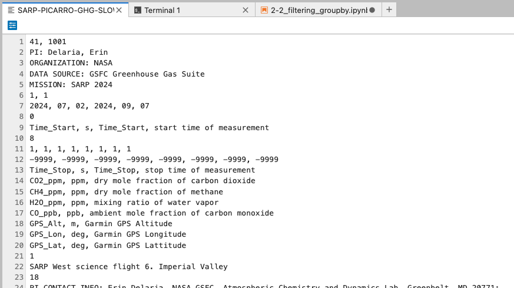
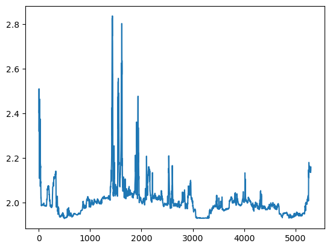
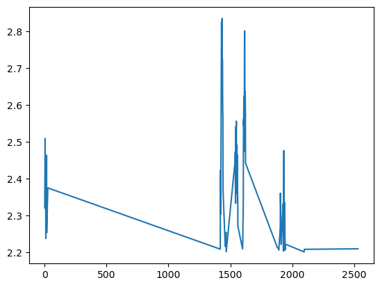
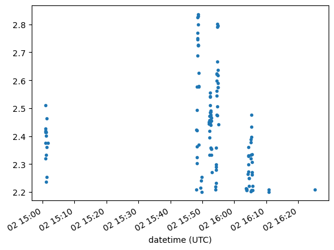
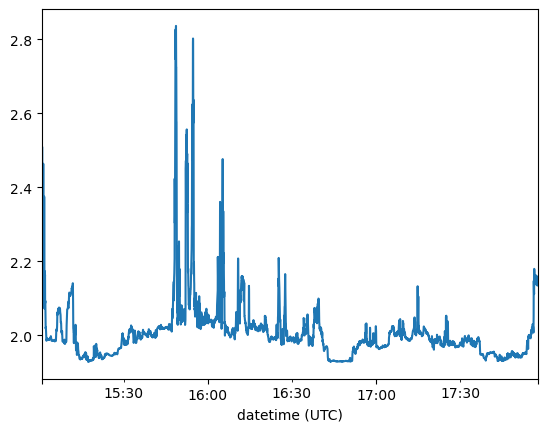

2.2 Filtering and groupby#
Lesson Content
🗑️ Filtering
📍 Setting an Index
🔪 Groupby
Context#
We spent yesterday getting comfortable in pandas. We opened some data, explored it, and ran a few functions. Today we are going to expand on what we are doing by learning a few powerful ways to interrogate our data – filtering and grouping. These manipulations help us get at the specific part of a dataset that we need.
Loading our data#
In this lesson we will be using data from the Picarro instrument onboard a 2024 SARP flight.
https://www-air.larc.nasa.gov/cgi-bin/ArcView/sarp.2024?DA-B200=1
import pandas as pd
# This line shortens the output
pd.set_option('display.max_rows', 10)
---------------------------------------------------------------------------
ModuleNotFoundError Traceback (most recent call last)
Cell In[1], line 1
----> 1 import pandas as pd
3 # This line shortens the output
4 pd.set_option('display.max_rows', 10)
ModuleNotFoundError: No module named 'pandas'
File format: The file below is an icartt file. This file is specifically designed for flight data
picarro_flight = pd.read_csv('./data/SARP-PICARRO-GHG-SLOW_DA-B200_20240702_R0_L1.ict')
---------------------------------------------------------------------------
ParserError Traceback (most recent call last)
Cell In[2], line 1
----> 1 picarro_flight = pd.read_csv('./data/SARP-PICARRO-GHG-SLOW_DA-B200_20240702_R0_L1.ict')
File /srv/conda/envs/notebook/lib/python3.11/site-packages/pandas/io/parsers/readers.py:1026, in read_csv(filepath_or_buffer, sep, delimiter, header, names, index_col, usecols, dtype, engine, converters, true_values, false_values, skipinitialspace, skiprows, skipfooter, nrows, na_values, keep_default_na, na_filter, verbose, skip_blank_lines, parse_dates, infer_datetime_format, keep_date_col, date_parser, date_format, dayfirst, cache_dates, iterator, chunksize, compression, thousands, decimal, lineterminator, quotechar, quoting, doublequote, escapechar, comment, encoding, encoding_errors, dialect, on_bad_lines, delim_whitespace, low_memory, memory_map, float_precision, storage_options, dtype_backend)
1013 kwds_defaults = _refine_defaults_read(
1014 dialect,
1015 delimiter,
(...)
1022 dtype_backend=dtype_backend,
1023 )
1024 kwds.update(kwds_defaults)
-> 1026 return _read(filepath_or_buffer, kwds)
File /srv/conda/envs/notebook/lib/python3.11/site-packages/pandas/io/parsers/readers.py:626, in _read(filepath_or_buffer, kwds)
623 return parser
625 with parser:
--> 626 return parser.read(nrows)
File /srv/conda/envs/notebook/lib/python3.11/site-packages/pandas/io/parsers/readers.py:1923, in TextFileReader.read(self, nrows)
1916 nrows = validate_integer("nrows", nrows)
1917 try:
1918 # error: "ParserBase" has no attribute "read"
1919 (
1920 index,
1921 columns,
1922 col_dict,
-> 1923 ) = self._engine.read( # type: ignore[attr-defined]
1924 nrows
1925 )
1926 except Exception:
1927 self.close()
File /srv/conda/envs/notebook/lib/python3.11/site-packages/pandas/io/parsers/c_parser_wrapper.py:234, in CParserWrapper.read(self, nrows)
232 try:
233 if self.low_memory:
--> 234 chunks = self._reader.read_low_memory(nrows)
235 # destructive to chunks
236 data = _concatenate_chunks(chunks)
File parsers.pyx:838, in pandas._libs.parsers.TextReader.read_low_memory()
File parsers.pyx:905, in pandas._libs.parsers.TextReader._read_rows()
File parsers.pyx:874, in pandas._libs.parsers.TextReader._tokenize_rows()
File parsers.pyx:891, in pandas._libs.parsers.TextReader._check_tokenize_status()
File parsers.pyx:2061, in pandas._libs.parsers.raise_parser_error()
ParserError: Error tokenizing data. C error: Expected 2 fields in line 7, saw 6
icartt files store metadata in the first few lines of the file. This metadata information is useful to read through, but isn’t used by pandas for creating the dataframe. What we need to do is let pandas know that it should skip past those first few lines of metadata. We do that with the skiprows argument.
picarro_flight = pd.read_csv(
'./data/SARP-PICARRO-GHG-SLOW_DA-B200_20240702_R0_L1.ict',
skiprows=50,
)
picarro_flight
| 50535.78 | 50537.78 | -9999.000 | -9999.00000 | -9999 | -9999.0 | -9999.000000 | -9999.000000.1 | -9999.000000.2 | |
|---|---|---|---|---|---|---|---|---|---|
| 0 | 50537.78 | 50539.78 | -9999.0 | -9999.0 | -9999 | -9999.0 | -9999.000000 | -9999.000000 | -9999.000000 |
| 1 | 50539.78 | 50541.78 | -9999.0 | -9999.0 | -9999 | -9999.0 | -9999.000000 | -9999.000000 | -9999.000000 |
| 2 | 50541.78 | 50543.78 | -9999.0 | -9999.0 | -9999 | -9999.0 | -9999.000000 | -9999.000000 | -9999.000000 |
| 3 | 50543.78 | 50545.78 | -9999.0 | -9999.0 | -9999 | -9999.0 | -9999.000000 | -9999.000000 | -9999.000000 |
| 4 | 50545.78 | 50547.78 | -9999.0 | -9999.0 | -9999 | -9999.0 | -9999.000000 | -9999.000000 | -9999.000000 |
| ... | ... | ... | ... | ... | ... | ... | ... | ... | ... |
| 7271 | 65079.78 | 65081.78 | -9999.0 | -9999.0 | -9999 | -9999.0 | 303.527118 | -117.612080 | 34.051416 |
| 7272 | 65081.78 | 65083.78 | -9999.0 | -9999.0 | -9999 | -9999.0 | 303.472604 | -117.612087 | 34.051407 |
| 7273 | 65083.78 | 65085.78 | -9999.0 | -9999.0 | -9999 | -9999.0 | 303.305524 | -117.612095 | 34.051402 |
| 7274 | 65085.78 | 65087.78 | -9999.0 | -9999.0 | -9999 | -9999.0 | 303.175135 | -117.612098 | 34.051393 |
| 7275 | 65087.78 | 65089.78 | -9999.0 | -9999.0 | -9999 | -9999.0 | 303.044566 | -117.612098 | 34.051386 |
7276 rows × 9 columns
What have we got? Well we’ve made progress in that we have read the file without errors. Notice the column names, however. Those look like data values, not column names. It appears as though we have skipped too many rows. But how do we know how many rows to skip without reading the file?
Option 1: Open the file outside Python
Because icartt files are csv files they can be opened in any csv viewer. Cryocloud has a csv viewer built in, or you can use excel if you are on you computer. Double click the file to open it.

We can see on that first line the number 41. That 41 tells us that the data header is on line 41 of the file. So, if we skip the first 40 rows of data we should start exactly where we want. Let’s try it out:
picarro_flight = pd.read_csv(
'./data/SARP-PICARRO-GHG-SLOW_DA-B200_20240702_R0_L1.ict',
skiprows=40,
)
picarro_flight
| Time_Start | Time_Stop | CO2_ppm | CH4_ppm | H2O_ppm | CO_ppb | GPS_Alt | GPS_Lon | GPS_Lat | |
|---|---|---|---|---|---|---|---|---|---|
| 0 | 50517.78 | 50519.78 | -9999.0 | -9999.0 | -9999 | -9999.0 | -9999.000000 | -9999.000000 | -9999.000000 |
| 1 | 50519.78 | 50521.78 | -9999.0 | -9999.0 | -9999 | -9999.0 | -9999.000000 | -9999.000000 | -9999.000000 |
| 2 | 50521.78 | 50523.78 | -9999.0 | -9999.0 | -9999 | -9999.0 | -9999.000000 | -9999.000000 | -9999.000000 |
| 3 | 50523.78 | 50525.78 | -9999.0 | -9999.0 | -9999 | -9999.0 | -9999.000000 | -9999.000000 | -9999.000000 |
| 4 | 50525.78 | 50527.78 | -9999.0 | -9999.0 | -9999 | -9999.0 | -9999.000000 | -9999.000000 | -9999.000000 |
| ... | ... | ... | ... | ... | ... | ... | ... | ... | ... |
| 7281 | 65079.78 | 65081.78 | -9999.0 | -9999.0 | -9999 | -9999.0 | 303.527118 | -117.612080 | 34.051416 |
| 7282 | 65081.78 | 65083.78 | -9999.0 | -9999.0 | -9999 | -9999.0 | 303.472604 | -117.612087 | 34.051407 |
| 7283 | 65083.78 | 65085.78 | -9999.0 | -9999.0 | -9999 | -9999.0 | 303.305524 | -117.612095 | 34.051402 |
| 7284 | 65085.78 | 65087.78 | -9999.0 | -9999.0 | -9999 | -9999.0 | 303.175135 | -117.612098 | 34.051393 |
| 7285 | 65087.78 | 65089.78 | -9999.0 | -9999.0 | -9999 | -9999.0 | 303.044566 | -117.612098 | 34.051386 |
7286 rows × 9 columns
Beautiful! Our raw data.
(intermediate) Option 2: Use Python to read the first line
On smaller files its fine to open them in a csv reader. Larger files, though, will struggle to render in Cryocloud and even in excel. To perform the same check programmatically we can use Python to read the file:
with open('./data/SARP-PICARRO-GHG-SLOW_DA-B200_20240702_R0_L1.ict') as f:
firstline = f.readline()
print(firstline)
41, 1001
There we have the same information as we found manually – the magic 41 that tells use we need to skip 40 rows of metadata information.
Next we are going to do a bit of data cleaning to get our dataset ready for the rest of the lesson.
from datetime import datetime, timedelta
import numpy as np
# Fill -9999 with NaN
picarro_flight.replace(-9999, np.nan, inplace=True)
# Remove any rows before data started to be collected
picarro_flight = picarro_flight[~picarro_flight[' CO2_ppm'].isnull()]
picarro_flight.reset_index(drop=True, inplace=True)
# Convert the star time to a datetime and insert it as the first column in the dataframe
picarro_flight.insert(0, 'datetime (UTC)', picarro_flight.apply(
lambda row: datetime(2024, 7, 2) + timedelta(seconds=round(row['Time_Start'])),
axis=1
))
The cleaned data:
picarro_flight
| datetime (UTC) | Time_Start | Time_Stop | CO2_ppm | CH4_ppm | H2O_ppm | CO_ppb | GPS_Alt | GPS_Lon | GPS_Lat | |
|---|---|---|---|---|---|---|---|---|---|---|
| 0 | 2024-07-02 15:00:52 | 54051.78 | 54053.78 | 458.790 | 2.32010 | 17173.0 | 335.3 | 389.879753 | -117.639455 | 34.037073 |
| 1 | 2024-07-02 15:00:54 | 54053.78 | 54055.78 | 458.760 | 2.37453 | 17212.0 | 335.1 | 413.698873 | -117.639068 | 34.035502 |
| 2 | 2024-07-02 15:00:56 | 54055.78 | 54057.78 | 460.070 | 2.41431 | 17171.0 | 303.1 | 428.501557 | -117.638719 | 34.034044 |
| 3 | 2024-07-02 15:00:58 | 54057.78 | 54059.78 | 462.200 | 2.50937 | 17072.0 | 302.0 | 443.528247 | -117.638157 | 34.032327 |
| 4 | 2024-07-02 15:01:00 | 54059.78 | 54061.78 | 462.323 | 2.42580 | 17204.0 | 299.7 | 467.734623 | -117.637646 | 34.030759 |
| ... | ... | ... | ... | ... | ... | ... | ... | ... | ... | ... |
| 5298 | 2024-07-02 17:57:28 | 64647.78 | 64649.78 | 453.317 | 2.13683 | 16550.0 | 311.7 | 335.601082 | -117.582164 | 34.056872 |
| 5299 | 2024-07-02 17:57:30 | 64649.78 | 64651.78 | 453.916 | 2.14152 | 16617.0 | 313.5 | 327.524082 | -117.583783 | 34.056886 |
| 5300 | 2024-07-02 17:57:32 | 64651.78 | 64653.78 | 454.102 | 2.14418 | 17055.0 | 319.5 | 320.590900 | -117.585301 | 34.056888 |
| 5301 | 2024-07-02 17:57:34 | 64653.78 | 64655.78 | 455.835 | 2.14418 | 17055.0 | 330.2 | 313.019498 | -117.586845 | 34.056888 |
| 5302 | 2024-07-02 17:57:36 | 64655.78 | 64657.78 | 455.938 | 2.15877 | 17167.0 | 331.4 | 306.001105 | -117.588324 | 34.056887 |
5303 rows × 10 columns
Intermediate topic: lambda functions
def convert_to_datetime(row):
time = datetime(2024, 7, 2) + timedelta(seconds=row['Time_Start'])
return time
picarro_flight.apply(convert_to_datetime, axis=1)
As usual, since we just opened new data let’s make a quick plot as a sanity check to make sure things look as we expect. As our sanity check plot let’s just plot the \(CH_4\) column.
picarro_flight[' CH4_ppm'].plot()
<Axes: >

What do we see? Well the y axis, \(CH_4\) looks pretty reasonable. ~1.9-3ppm is in the range of normal for \(CH_4\). The x axis is just showing the data in order. We can tell from looking at the Start_Time column of our dataframe that the data are organized in chronological order, following the flight track. So we are seeing the observed values of \(CH_4\) over the course of this flight. That’s all looking normal so far, so let’s move onto to some new operations.
Do you wish that the x axis would show the time instead of the row number? Hang tight until the “Setting an Index” section to make that dream come true.
Filtering#
So let’s start with a general question. We learned about booleans and comparisons on Monday of this week.
What would happen if we used a comparison on a pandas dataframe?
Give this a think:
water_vars['discharge'] == 8.1
The answer? We get another dataframe. This dataframe is the size and shape as the thing used in comparison, but it is full of Boolean values telling us if the comparsion was true.
So what is the use of a list of booleans? Let’s start with a simplified list of booleans and experiment.
import random
# Create just a list of booleans, instead of a full dataframe
random_booleans = [random.choice([True, False]) for x in range(5303)]
# Use the list of booleans with square brackets, sort of like a key in a dictionary
picarro_flight[random_booleans]
| datetime (UTC) | Time_Start | Time_Stop | CO2_ppm | CH4_ppm | H2O_ppm | CO_ppb | GPS_Alt | GPS_Lon | GPS_Lat | |
|---|---|---|---|---|---|---|---|---|---|---|
| 0 | 2024-07-02 15:00:51.780 | 54051.78 | 54053.78 | 458.790 | 2.32010 | 17173.0 | 335.3 | 389.879753 | -117.639455 | 34.037073 |
| 3 | 2024-07-02 15:00:57.780 | 54057.78 | 54059.78 | 462.200 | 2.50937 | 17072.0 | 302.0 | 443.528247 | -117.638157 | 34.032327 |
| 5 | 2024-07-02 15:01:01.780 | 54061.78 | 54063.78 | 465.513 | 2.41768 | 17196.0 | 304.5 | 491.383527 | -117.637150 | 34.029310 |
| 6 | 2024-07-02 15:01:03.780 | 54063.78 | 54065.78 | 459.283 | 2.40071 | 17181.0 | 300.5 | 519.658339 | -117.636573 | 34.027919 |
| 7 | 2024-07-02 15:01:05.780 | 54065.78 | 54067.78 | 459.978 | 2.41435 | 17232.0 | 294.0 | 545.366933 | -117.635968 | 34.026508 |
| ... | ... | ... | ... | ... | ... | ... | ... | ... | ... | ... |
| 5296 | 2024-07-02 17:57:23.780 | 64643.78 | 64645.78 | 453.254 | 2.14017 | 16415.0 | 320.0 | 353.344198 | -117.578940 | 34.056842 |
| 5299 | 2024-07-02 17:57:29.780 | 64649.78 | 64651.78 | 453.916 | 2.14152 | 16617.0 | 313.5 | 327.524082 | -117.583783 | 34.056886 |
| 5300 | 2024-07-02 17:57:31.780 | 64651.78 | 64653.78 | 454.102 | 2.14418 | 17055.0 | 319.5 | 320.590900 | -117.585301 | 34.056888 |
| 5301 | 2024-07-02 17:57:33.780 | 64653.78 | 64655.78 | 455.835 | 2.14418 | 17055.0 | 330.2 | 313.019498 | -117.586845 | 34.056888 |
| 5302 | 2024-07-02 17:57:35.780 | 64655.78 | 64657.78 | 455.938 | 2.15877 | 17167.0 | 331.4 | 306.001105 | -117.588324 | 34.056887 |
2607 rows × 10 columns
That returned only the rows where the value in the list was True!
This is exciting, because this is the basis for filtering rows in pandas. Trying it again with our conditional statement from above water_vars['dissolved oxygen'] == 8.2:
picarro_flight
| datetime (UTC) | Time_Start | Time_Stop | CO2_ppm | CH4_ppm | H2O_ppm | CO_ppb | GPS_Alt | GPS_Lon | GPS_Lat | |
|---|---|---|---|---|---|---|---|---|---|---|
| 0 | 2024-07-02 15:00:51.780 | 54051.78 | 54053.78 | 458.790 | 2.32010 | 17173.0 | 335.3 | 389.879753 | -117.639455 | 34.037073 |
| 1 | 2024-07-02 15:00:53.780 | 54053.78 | 54055.78 | 458.760 | 2.37453 | 17212.0 | 335.1 | 413.698873 | -117.639068 | 34.035502 |
| 2 | 2024-07-02 15:00:55.780 | 54055.78 | 54057.78 | 460.070 | 2.41431 | 17171.0 | 303.1 | 428.501557 | -117.638719 | 34.034044 |
| 3 | 2024-07-02 15:00:57.780 | 54057.78 | 54059.78 | 462.200 | 2.50937 | 17072.0 | 302.0 | 443.528247 | -117.638157 | 34.032327 |
| 4 | 2024-07-02 15:00:59.780 | 54059.78 | 54061.78 | 462.323 | 2.42580 | 17204.0 | 299.7 | 467.734623 | -117.637646 | 34.030759 |
| ... | ... | ... | ... | ... | ... | ... | ... | ... | ... | ... |
| 5298 | 2024-07-02 17:57:27.780 | 64647.78 | 64649.78 | 453.317 | 2.13683 | 16550.0 | 311.7 | 335.601082 | -117.582164 | 34.056872 |
| 5299 | 2024-07-02 17:57:29.780 | 64649.78 | 64651.78 | 453.916 | 2.14152 | 16617.0 | 313.5 | 327.524082 | -117.583783 | 34.056886 |
| 5300 | 2024-07-02 17:57:31.780 | 64651.78 | 64653.78 | 454.102 | 2.14418 | 17055.0 | 319.5 | 320.590900 | -117.585301 | 34.056888 |
| 5301 | 2024-07-02 17:57:33.780 | 64653.78 | 64655.78 | 455.835 | 2.14418 | 17055.0 | 330.2 | 313.019498 | -117.586845 | 34.056888 |
| 5302 | 2024-07-02 17:57:35.780 | 64655.78 | 64657.78 | 455.938 | 2.15877 | 17167.0 | 331.4 | 306.001105 | -117.588324 | 34.056887 |
5303 rows × 10 columns
# make a dataframe indicating where dissolved oxygen == 8.2
boolean_dataframe = picarro_flight[' CH4_ppm'] > 2.2
# returns only the rows where dissolved oxygen == 8.2
picarro_flight[boolean_dataframe]
| datetime (UTC) | Time_Start | Time_Stop | CO2_ppm | CH4_ppm | H2O_ppm | CO_ppb | GPS_Alt | GPS_Lon | GPS_Lat | |
|---|---|---|---|---|---|---|---|---|---|---|
| 0 | 2024-07-02 15:00:51.780 | 54051.78 | 54053.78 | 458.790 | 2.32010 | 17173.0 | 335.3 | 389.879753 | -117.639455 | 34.037073 |
| 1 | 2024-07-02 15:00:53.780 | 54053.78 | 54055.78 | 458.760 | 2.37453 | 17212.0 | 335.1 | 413.698873 | -117.639068 | 34.035502 |
| 2 | 2024-07-02 15:00:55.780 | 54055.78 | 54057.78 | 460.070 | 2.41431 | 17171.0 | 303.1 | 428.501557 | -117.638719 | 34.034044 |
| 3 | 2024-07-02 15:00:57.780 | 54057.78 | 54059.78 | 462.200 | 2.50937 | 17072.0 | 302.0 | 443.528247 | -117.638157 | 34.032327 |
| 4 | 2024-07-02 15:00:59.780 | 54059.78 | 54061.78 | 462.323 | 2.42580 | 17204.0 | 299.7 | 467.734623 | -117.637646 | 34.030759 |
| ... | ... | ... | ... | ... | ... | ... | ... | ... | ... | ... |
| 5298 | 2024-07-02 17:57:27.780 | 64647.78 | 64649.78 | 453.317 | 2.13683 | 16550.0 | 311.7 | 335.601082 | -117.582164 | 34.056872 |
| 5299 | 2024-07-02 17:57:29.780 | 64649.78 | 64651.78 | 453.916 | 2.14152 | 16617.0 | 313.5 | 327.524082 | -117.583783 | 34.056886 |
| 5300 | 2024-07-02 17:57:31.780 | 64651.78 | 64653.78 | 454.102 | 2.14418 | 17055.0 | 319.5 | 320.590900 | -117.585301 | 34.056888 |
| 5301 | 2024-07-02 17:57:33.780 | 64653.78 | 64655.78 | 455.835 | 2.14418 | 17055.0 | 330.2 | 313.019498 | -117.586845 | 34.056888 |
| 5302 | 2024-07-02 17:57:35.780 | 64655.78 | 64657.78 | 455.938 | 2.15877 | 17167.0 | 331.4 | 306.001105 | -117.588324 | 34.056887 |
2231 rows × 10 columns
While there are several steps, this process is most commonly done in a single step:
picarro_flight[picarro_flight[' CH4_ppm'] > 2.2]
| datetime (UTC) | Time_Start | Time_Stop | CO2_ppm | CH4_ppm | H2O_ppm | CO_ppb | GPS_Alt | GPS_Lon | GPS_Lat | |
|---|---|---|---|---|---|---|---|---|---|---|
| 0 | 2024-07-02 15:00:52 | 54051.78 | 54053.78 | 458.790 | 2.32010 | 17173.0 | 335.3 | 389.879753 | -117.639455 | 34.037073 |
| 1 | 2024-07-02 15:00:54 | 54053.78 | 54055.78 | 458.760 | 2.37453 | 17212.0 | 335.1 | 413.698873 | -117.639068 | 34.035502 |
| 2 | 2024-07-02 15:00:56 | 54055.78 | 54057.78 | 460.070 | 2.41431 | 17171.0 | 303.1 | 428.501557 | -117.638719 | 34.034044 |
| 3 | 2024-07-02 15:00:58 | 54057.78 | 54059.78 | 462.200 | 2.50937 | 17072.0 | 302.0 | 443.528247 | -117.638157 | 34.032327 |
| 4 | 2024-07-02 15:01:00 | 54059.78 | 54061.78 | 462.323 | 2.42580 | 17204.0 | 299.7 | 467.734623 | -117.637646 | 34.030759 |
| ... | ... | ... | ... | ... | ... | ... | ... | ... | ... | ... |
| 1943 | 2024-07-02 16:05:38 | 57937.78 | 57939.78 | 454.269 | 2.20592 | 11064.0 | 182.0 | 105.771602 | -115.423041 | 33.110165 |
| 1944 | 2024-07-02 16:05:40 | 57939.78 | 57941.78 | 453.157 | 2.22177 | 11094.0 | 182.7 | 105.505902 | -115.421393 | 33.110432 |
| 2097 | 2024-07-02 16:10:46 | 58245.78 | 58247.78 | 445.517 | 2.20064 | 12216.0 | 163.3 | 105.562942 | -115.426698 | 33.052851 |
| 2098 | 2024-07-02 16:10:48 | 58247.78 | 58249.78 | 444.504 | 2.20760 | 12141.0 | 164.5 | 106.693839 | -115.427742 | 33.051837 |
| 2532 | 2024-07-02 16:25:16 | 59115.78 | 59117.78 | 429.246 | 2.20904 | 13983.0 | 123.5 | 171.185377 | -115.320763 | 32.758445 |
122 rows × 10 columns
picarro_flight[picarro_flight[' CH4_ppm'] > 2.2][' CH4_ppm'].plot()
<Axes: >

What’s happening in this sanity check plot? Well we can see that our filter worked because there aren’t any values below 2.2. But what is happening in betweeen? In a line plot pandas is going to connect each value to the next value with a line. The lines are connecting across the regions that now don’t have any data in them, making them look odd.
If you just wanted a simple plot to make sure that all the values are above 2.2 then the plot above does that job. If you’d like it to look a little neater you can use the style argument with a value of '.'. This tells pandas to render little dots instead of connecting each observation with a line.
picarro_flight[picarro_flight[' CH4_ppm'] > 2.2][' CH4_ppm'].plot(style='.')
<Axes: xlabel='datetime (UTC)'>

📝 Check your understanding
Write a cell of code that returns only the rows of the water_vars dataframe where discharge is less than or equal to 46.
Using and and or#
You can continue to make your filter more specific by using multiple filters. The syntax that we used in the first lesson was:
num_cats = 3
num_dogs = 2
print(num_cats > 2 and num_dogs > 2)
print(num_cats > 2 or num_dogs > 2)
False
True
While the meaning of and and or is the same in pandas, the syntax is slightly different. In pandas:
Python |
Pandas |
|---|---|
and |
& |
or |
| |
You also have to be sure to wrap each individual conditional statement in parenthesis ().
picarro_flight
| datetime (UTC) | Time_Start | Time_Stop | CO2_ppm | CH4_ppm | H2O_ppm | CO_ppb | GPS_Alt | GPS_Lon | GPS_Lat | |
|---|---|---|---|---|---|---|---|---|---|---|
| 0 | 2024-07-02 15:00:51.780 | 54051.78 | 54053.78 | 458.790 | 2.32010 | 17173.0 | 335.3 | 389.879753 | -117.639455 | 34.037073 |
| 1 | 2024-07-02 15:00:53.780 | 54053.78 | 54055.78 | 458.760 | 2.37453 | 17212.0 | 335.1 | 413.698873 | -117.639068 | 34.035502 |
| 2 | 2024-07-02 15:00:55.780 | 54055.78 | 54057.78 | 460.070 | 2.41431 | 17171.0 | 303.1 | 428.501557 | -117.638719 | 34.034044 |
| 3 | 2024-07-02 15:00:57.780 | 54057.78 | 54059.78 | 462.200 | 2.50937 | 17072.0 | 302.0 | 443.528247 | -117.638157 | 34.032327 |
| 4 | 2024-07-02 15:00:59.780 | 54059.78 | 54061.78 | 462.323 | 2.42580 | 17204.0 | 299.7 | 467.734623 | -117.637646 | 34.030759 |
| ... | ... | ... | ... | ... | ... | ... | ... | ... | ... | ... |
| 5298 | 2024-07-02 17:57:27.780 | 64647.78 | 64649.78 | 453.317 | 2.13683 | 16550.0 | 311.7 | 335.601082 | -117.582164 | 34.056872 |
| 5299 | 2024-07-02 17:57:29.780 | 64649.78 | 64651.78 | 453.916 | 2.14152 | 16617.0 | 313.5 | 327.524082 | -117.583783 | 34.056886 |
| 5300 | 2024-07-02 17:57:31.780 | 64651.78 | 64653.78 | 454.102 | 2.14418 | 17055.0 | 319.5 | 320.590900 | -117.585301 | 34.056888 |
| 5301 | 2024-07-02 17:57:33.780 | 64653.78 | 64655.78 | 455.835 | 2.14418 | 17055.0 | 330.2 | 313.019498 | -117.586845 | 34.056888 |
| 5302 | 2024-07-02 17:57:35.780 | 64655.78 | 64657.78 | 455.938 | 2.15877 | 17167.0 | 331.4 | 306.001105 | -117.588324 | 34.056887 |
5303 rows × 10 columns
# Cells where pH < 8 and dam release was True
picarro_flight[(picarro_flight[' CH4_ppm'] > 2) & (picarro_flight[' CO2_ppm'] < 440)]
| datetime (UTC) | Time_Start | Time_Stop | CO2_ppm | CH4_ppm | H2O_ppm | CO_ppb | GPS_Alt | GPS_Lon | GPS_Lat | |
|---|---|---|---|---|---|---|---|---|---|---|
| 38 | 2024-07-02 15:02:07.780 | 54127.78 | 54129.78 | 439.095 | 2.07115 | 14441.0 | 198.6 | 764.617646 | -117.594656 | 34.002401 |
| 39 | 2024-07-02 15:02:09.780 | 54129.78 | 54131.78 | 432.902 | 2.04689 | 13602.0 | 164.2 | 787.966822 | -117.592941 | 34.001951 |
| 40 | 2024-07-02 15:02:11.780 | 54131.78 | 54133.78 | 430.113 | 2.02776 | 12941.0 | 180.8 | 809.645831 | -117.591265 | 34.001496 |
| 41 | 2024-07-02 15:02:13.780 | 54133.78 | 54135.78 | 432.392 | 2.01841 | 12095.0 | 190.7 | 829.670768 | -117.589655 | 34.001055 |
| 42 | 2024-07-02 15:02:15.780 | 54135.78 | 54137.78 | 434.077 | 2.02114 | 11732.0 | 179.4 | 849.024002 | -117.588064 | 34.000617 |
| ... | ... | ... | ... | ... | ... | ... | ... | ... | ... | ... |
| 5252 | 2024-07-02 17:55:55.780 | 64555.78 | 64557.78 | 432.241 | 2.02297 | 11823.0 | 182.1 | 738.176644 | -117.493828 | 34.056728 |
| 5253 | 2024-07-02 17:55:57.780 | 64557.78 | 64559.78 | 431.925 | 2.01713 | 11284.0 | 178.2 | 728.306846 | -117.496191 | 34.056706 |
| 5254 | 2024-07-02 17:55:59.780 | 64559.78 | 64561.78 | 432.113 | 2.01684 | 11257.0 | 157.5 | 719.288783 | -117.498544 | 34.056692 |
| 5255 | 2024-07-02 17:56:01.780 | 64561.78 | 64563.78 | 432.144 | 2.00731 | 11370.0 | 152.3 | 710.368556 | -117.500843 | 34.056692 |
| 5256 | 2024-07-02 17:56:03.780 | 64563.78 | 64565.78 | 432.524 | 2.03067 | 12158.0 | 250.5 | 701.251764 | -117.503202 | 34.056705 |
1762 rows × 10 columns
picarro_flight[(picarro_flight[' CH4_ppm'] > 2) | (picarro_flight[' CO2_ppm'] < 440)]
| datetime (UTC) | Time_Start | Time_Stop | CO2_ppm | CH4_ppm | H2O_ppm | CO_ppb | GPS_Alt | GPS_Lon | GPS_Lat | |
|---|---|---|---|---|---|---|---|---|---|---|
| 0 | 2024-07-02 15:00:51.780 | 54051.78 | 54053.78 | 458.790 | 2.32010 | 17173.0 | 335.3 | 389.879753 | -117.639455 | 34.037073 |
| 1 | 2024-07-02 15:00:53.780 | 54053.78 | 54055.78 | 458.760 | 2.37453 | 17212.0 | 335.1 | 413.698873 | -117.639068 | 34.035502 |
| 2 | 2024-07-02 15:00:55.780 | 54055.78 | 54057.78 | 460.070 | 2.41431 | 17171.0 | 303.1 | 428.501557 | -117.638719 | 34.034044 |
| 3 | 2024-07-02 15:00:57.780 | 54057.78 | 54059.78 | 462.200 | 2.50937 | 17072.0 | 302.0 | 443.528247 | -117.638157 | 34.032327 |
| 4 | 2024-07-02 15:00:59.780 | 54059.78 | 54061.78 | 462.323 | 2.42580 | 17204.0 | 299.7 | 467.734623 | -117.637646 | 34.030759 |
| ... | ... | ... | ... | ... | ... | ... | ... | ... | ... | ... |
| 5298 | 2024-07-02 17:57:27.780 | 64647.78 | 64649.78 | 453.317 | 2.13683 | 16550.0 | 311.7 | 335.601082 | -117.582164 | 34.056872 |
| 5299 | 2024-07-02 17:57:29.780 | 64649.78 | 64651.78 | 453.916 | 2.14152 | 16617.0 | 313.5 | 327.524082 | -117.583783 | 34.056886 |
| 5300 | 2024-07-02 17:57:31.780 | 64651.78 | 64653.78 | 454.102 | 2.14418 | 17055.0 | 319.5 | 320.590900 | -117.585301 | 34.056888 |
| 5301 | 2024-07-02 17:57:33.780 | 64653.78 | 64655.78 | 455.835 | 2.14418 | 17055.0 | 330.2 | 313.019498 | -117.586845 | 34.056888 |
| 5302 | 2024-07-02 17:57:35.780 | 64655.78 | 64657.78 | 455.938 | 2.15877 | 17167.0 | 331.4 | 306.001105 | -117.588324 | 34.056887 |
5303 rows × 10 columns
There is more than one way to do this type of filtering in pandas, but it is fine to start with one method and feel really comfortable with it before moving to the others. This article has a pretty nice overview of some other methods.
📝 Check your understanding
How is the following line of code filtering the water_vars dataset?
water_vars[(water_vars['discharge'] <= 46) | (water_vars['dam release'] > 42)]
Setting an Index#
Whether using pandas or excel or a SQL database, the index is an important part of your organization.
The most important part of in index is that it is unique, meaning no two rows of data is allowed to have the same index
This is important for keeping the data organized, not just practically but also conceptually.
One of the powerful components of pandas is that you aren’t required to have a number as the index of a dataframe. Let’s look at this with an example dataframe
grades = pd.DataFrame(
{
'name': ['Beatriz S', 'Joel H', 'Lashandra T', 'Ari T', 'Hassan A'],
'history': [78, 69, 80, 91, 79],
'science': [85, 80, 80, 73, 91],
'music': [81, 81, 90, 73, 89],
}
)
grades
| name | history | science | music | |
|---|---|---|---|---|
| 0 | Beatriz S | 78 | 85 | 81 |
| 1 | Joel H | 69 | 80 | 81 |
| 2 | Lashandra T | 80 | 80 | 90 |
| 3 | Ari T | 91 | 73 | 73 |
| 4 | Hassan A | 79 | 91 | 89 |
In this dataframe we have default indexes of 0 -> 4 set. We could pretty smoothly use these if we wanted and just know in our heads that Beatriz is index 0, Sara is index 1 and so on.
Alternatively, we could skip the step of remembering index numbers and just use the names of the students as the index. We do that with the .set_index() method.
grades.set_index('name')
| history | science | music | |
|---|---|---|---|
| name | |||
| Beatriz S | 78 | 85 | 81 |
| Joel H | 69 | 80 | 81 |
| Lashandra T | 80 | 80 | 90 |
| Ari T | 91 | 73 | 73 |
| Hassan A | 79 | 91 | 89 |
# update the original dataframe with the new index
grades = grades.set_index('name')
.iloc vs. loc#
So now that we have names as indexes, how do we select specific rows?
We can still use the same method we already know, iloc, with an integer index number and we will still get the same result.
grades.iloc[1]
history 69
science 80
music 81
Name: Joel H, dtype: int64
Alternatively we can also use a similar but slightly different method - .loc. .loc allows us to find specific rows based on an index label, not the integer.
grades.loc['Hassan A']
history 79
science 91
music 89
Name: Hassan A, dtype: int64
If you want a deep dive on .iloc vs. .loc this article is for you.
📝 Check your understanding
Write 2 lines of code to get Ari’s grades the grades dataframe. In one line use .iloc and in the other use .loc.
Explain to your partner the difference between .iloc and .loc.
One more example - datetime indices#
To move away from our toy example baack to our real data, we have a great column in the water_vars table just waiting to be an index – datetime.
Dates and times are generally fantastic indices, because, if the world is working in proper order, each moment in time only happens once, meaning their values are unique and they are really common indices.
picarro_flight = picarro_flight.set_index('datetime (UTC)')
picarro_flight
| Time_Start | Time_Stop | CO2_ppm | CH4_ppm | H2O_ppm | CO_ppb | GPS_Alt | GPS_Lon | GPS_Lat | |
|---|---|---|---|---|---|---|---|---|---|
| datetime (UTC) | |||||||||
| 2024-07-02 15:00:52 | 54051.78 | 54053.78 | 458.790 | 2.32010 | 17173.0 | 335.3 | 389.879753 | -117.639455 | 34.037073 |
| 2024-07-02 15:00:54 | 54053.78 | 54055.78 | 458.760 | 2.37453 | 17212.0 | 335.1 | 413.698873 | -117.639068 | 34.035502 |
| 2024-07-02 15:00:56 | 54055.78 | 54057.78 | 460.070 | 2.41431 | 17171.0 | 303.1 | 428.501557 | -117.638719 | 34.034044 |
| 2024-07-02 15:00:58 | 54057.78 | 54059.78 | 462.200 | 2.50937 | 17072.0 | 302.0 | 443.528247 | -117.638157 | 34.032327 |
| 2024-07-02 15:01:00 | 54059.78 | 54061.78 | 462.323 | 2.42580 | 17204.0 | 299.7 | 467.734623 | -117.637646 | 34.030759 |
| ... | ... | ... | ... | ... | ... | ... | ... | ... | ... |
| 2024-07-02 17:57:28 | 64647.78 | 64649.78 | 453.317 | 2.13683 | 16550.0 | 311.7 | 335.601082 | -117.582164 | 34.056872 |
| 2024-07-02 17:57:30 | 64649.78 | 64651.78 | 453.916 | 2.14152 | 16617.0 | 313.5 | 327.524082 | -117.583783 | 34.056886 |
| 2024-07-02 17:57:32 | 64651.78 | 64653.78 | 454.102 | 2.14418 | 17055.0 | 319.5 | 320.590900 | -117.585301 | 34.056888 |
| 2024-07-02 17:57:34 | 64653.78 | 64655.78 | 455.835 | 2.14418 | 17055.0 | 330.2 | 313.019498 | -117.586845 | 34.056888 |
| 2024-07-02 17:57:36 | 64655.78 | 64657.78 | 455.938 | 2.15877 | 17167.0 | 331.4 | 306.001105 | -117.588324 | 34.056887 |
5303 rows × 9 columns
picarro_flight.loc['2024-07-02 15:00:56']
Time_Start 54055.780000
Time_Stop 54057.780000
CO2_ppm 460.070000
CH4_ppm 2.414310
H2O_ppm 17171.000000
CO_ppb 303.100000
GPS_Alt 428.501557
GPS_Lon -117.638719
GPS_Lat 34.034044
Name: 2024-07-02 15:00:56, dtype: float64
Another benefit of setting the index is that it makes our plots a little cleaner. Remember how that first plot in the lesson of Methane vs. Time showed a generic row number on the x axis? Checkout what happens on that the index is a datetime:
picarro_flight[' CH4_ppm'].plot()
<Axes: xlabel='datetime (UTC)'>

Beautiful! A much more readable x axis.
📝 Check your understanding
Write a line of code to get the row corresponding to March 13th 2021 at 8:00am.
Groupby#
While we have 146 individual readings in our dataset sometimes we don’t care about each individual reading. Instead we probably care about the aggregate of a specific group of readings.
For example:
Given the average temperature of every county in the US, what is the average temperature in each state?
Given a list of the opening dates of every Chuck E Cheese stores, how many Chuck E Cheeses were opened each year? 🧀
In pandas (and tabular data in general) we answer questions like that that with groupby.
Breaking groupby into conceptual parts#
In addition to the dataframe, there are three main parts to a groupby:
Which variable we want to group together
How we want to group
The variable we want to see in the end
Without getting into syntax yet we can start by identifiying these in our two example questions.
Given the average temperature of every county in the US, what is the average temperature in each state?
Which variable to group together? -> We want to group counties into states
How do we want to group? -> Take the average
What variable do we want to look at? Temperature
Given a list of the opening dates of every Chuck E Cheese stores, how many Chuck E Cheeses were opened each year?
Which variable to group together? -> We want to group individual days into years
How do we want to group? -> Count them
What variable do we want to look at? Number of stores
📝 Check your understanding
Identify each of three main groupby parts in the following scenario:
Given the hourly temperatures for a location over the course of a month, what were the daily highs?
Which variable to group together?
How do we want to group?
What variable do we want to look at?
Pre-processing#
The code below adds to new columns “CO2_rating”, and “CH4_rating” to the dataframe. These classify the \(CO_2\) and \(CO_4\) measurements qualitatively instead of quantitatively so we can experiment with using groupby. Don’t worry too much about the code below, but notice the new columns at the end of the dataframe.
# Define cutoffs for the carbon dioxide and methane ratings
bins_co2 = [float('-inf'), 430, 440, float('inf')]
bins_ch4 = [float('-inf'), 2.0, 2.3, float('inf')]
labels = ['low', 'medium', 'high']
# Add carbon dioxide rating
picarro_flight['CO2_rating'] = pd.cut(
picarro_flight[' CO2_ppm'], bins=bins_co2,
labels=labels, include_lowest=True
).astype('str')
picarro_flight['CH4_rating']
datetime (UTC)
2024-07-02 15:00:52 high
2024-07-02 15:00:54 high
2024-07-02 15:00:56 high
2024-07-02 15:00:58 high
2024-07-02 15:01:00 high
...
2024-07-02 17:57:28 medium
2024-07-02 17:57:30 medium
2024-07-02 17:57:32 medium
2024-07-02 17:57:34 medium
2024-07-02 17:57:36 medium
Name: CH4_rating, Length: 5303, dtype: object
# Add methane rating
picarro_flight['CH4_rating'] = pd.cut(
picarro_flight[' CH4_ppm'], bins=bins_ch4,
labels=labels, include_lowest=True
).astype('str')
# Drop unneeded columns for the next exercise
picarro_flight.drop(
['Time_Start', ' Time_Stop', ' GPS_Lon', ' GPS_Lat'], axis=1, inplace=True
)
groupby syntax#
We can take these groupby concepts and translate them into syntax. The first two parts (which variable to group & how do we want to group) are required for pandas. The third one is optional.
Starting with just the two required variables, the general syntax is:
DATAFRAME.groupby(WHICH_GROUP).AGGREGATION()
Words in all capitals are variables. We’ll go into each part a little more below.
picarro_flight
CO2_ppm float64
CH4_ppm float64
H2O_ppm float64
CO_ppb float64
GPS_Alt float64
CO2_rating category
CH4_rating category
dtype: object
picarro_flight.groupby("CO2_rating").mean(numeric_only=True)
| CO2_ppm | CH4_ppm | H2O_ppm | CO_ppb | GPS_Alt | |
|---|---|---|---|---|---|
| CO2_rating | |||||
| high | 450.436554 | 2.192665 | 15200.166311 | 196.034755 | 261.402532 |
| low | 426.565941 | 1.967308 | 6102.602509 | 103.925914 | 1078.394145 |
| medium | 433.416890 | 2.019003 | 12846.384051 | 146.918542 | 171.895462 |
What do we see in the output?
Which (if any) of the other species are directly correlated with carbon dioxide?
Are the highest \(CO_2\) values near the surface or higher up?
'WHICH_GROUP'#
This variable can be any of the columns in the dataframe that can be put into discrete piles. We used 'safety_level' because it can easily be put into piles – low, medium and high.
We are still allowed to group on other columns, it’s just that the practicality can become questionable.
picarro_flight.groupby("CH4_rating").min(numeric_only=True)
| CO2_ppm | CH4_ppm | H2O_ppm | CO_ppb | GPS_Alt | |
|---|---|---|---|---|---|
| CH4_rating | |||||
| high | 440.061 | 2.30336 | 10057.0 | 131.0 | 49.318883 |
| low | 419.591 | 1.92809 | 1080.0 | 57.3 | 18.900000 |
| medium | 425.214 | 2.00006 | 4060.0 | 97.8 | -7.338963 |
Note
Because they are right next to each other it can be really tempting to want to put the variable you are most interested in seeing in place of WHICH_GROUP. If you do this and use a column that can’t be grouped, so consider the WHICH_GROUP variable if you are debugging.
Aggregation Functions#
The functions you can use in a groupby are limited, but there are still lots of options. Common ones include:
.count()- find the total number of rows.min()- find the minimum value of those rows.max()- find the maximum value of those rows.mean()- find the mean value of those rows.sum()- find the sum of the values of those rows
picarro_flight.groupby("CH4_rating").count()
| CO2_ppm | CH4_ppm | H2O_ppm | CO_ppb | GPS_Alt | CO2_rating | |
|---|---|---|---|---|---|---|
| CH4_rating | ||||||
| high | 89 | 89 | 89 | 89 | 89 | 89 |
| low | 3072 | 3072 | 3072 | 3072 | 3072 | 3072 |
| medium | 2142 | 2142 | 2142 | 2142 | 2142 | 2142 |
The third input#
In the conceptual explanation we often also specify which variable we want to look at. In pandas this isn’t always as important, since by default it gives us the full dataframe. If for some reason we do need to specify the exact variable of interest (ex. we have a very large dataframe, we are making a plot), we do that by adding the column name in after the groupby.
DATAFRAME.groupby(WHICH_GROUP)[INTEREST_VAR].AGGREGATION()
# Group our water dataframe by saftey level and take the mean of the discharge values for each safety level group
picarro_flight.groupby("CO2_rating")[' CH4_ppm'].mean()
CO2_rating
high 2.192665
low 1.967308
medium 2.019003
Name: CH4_ppm, dtype: float64
📝 Check your understanding
What is the maximum pH value during low safety level?
What is the mean discharge when dam releases are happening?
Breaking down the process#
There is a lot that happens in a single step with groupby and it can be a lot to take in. One way to mentally situate this process is to think about split-apply-combine.
split-apply-combine breaks down the groupby process into those three steps:
SPLIT the full data set into groups. Split is related to the question Which variable to group together?
APPLY the aggregation function to the individual groups. Apply is related to the question How do we want to group?
COMBINE the aggregated data into a new dataframe